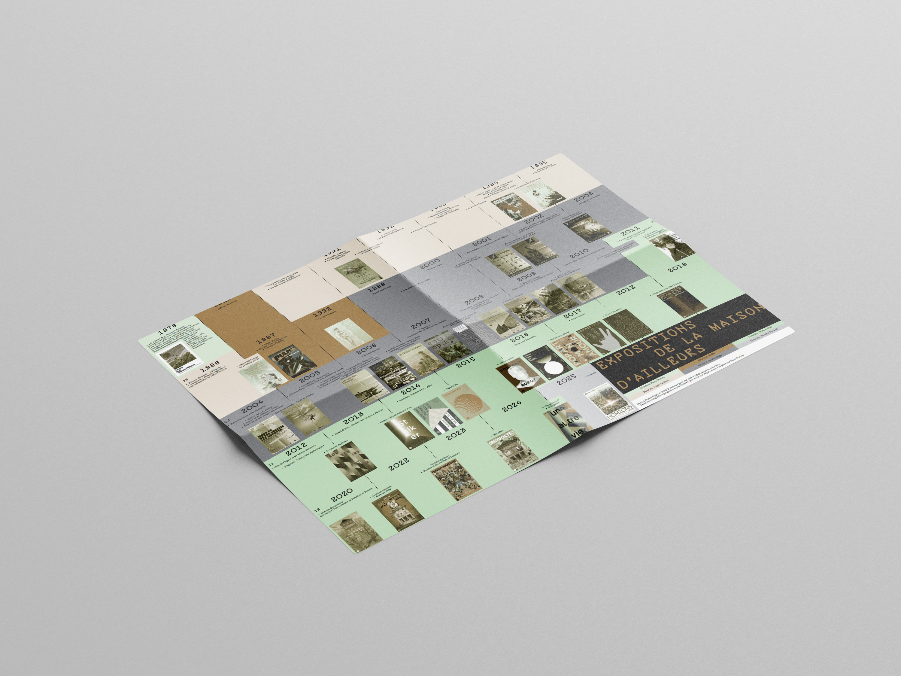

D’ailleurs Info —
50th year special
This commemorative anniversary newspaper edition marks fifty years of the Association des Amis de la Maison d’Ailleurs, transforming historic posters into a playful visual archive that honors the organization's rich history.


01 / COVER AND INTERIOR POSTER — Two views of the supplied publication. The same green connects the commemorative cover to the reading page.
A PAGE CAN HAVE MORE THAN ONE PACE.

02 / COVER DETAIL — The arched masthead, central illustration and flanking dates create three distinct ways into the page. Crop of the source work.
03 / INTERIOR DETAIL — Green panels provide pauses between columns; the image strip keeps a second, visual sequence in play. Crop of the source work.
Image Rights:
Les images utilisées et non créditées sont © Maison d’Ailleurs.
Institutional Support:
Cette publication a reçu le soutien de l’État de Vaud, Direction Générale de la Culture, et de la Fondation Leenaards.
Information & Contact:
info@amda.ch |
www.amda.ch
PROJECT NOTE / The views above show the existing artwork and enlarged crops of it. Commentary describes the visible composition; no additional pages or production claims are implied.

50 Years of the Association des Amis de la Maison d’Ailleurs: Commemorative Anniversary Edition
Created to mark the 50th anniversary of the Association des Amis de la Maison d’Ailleurs, this commemorative edition reimagines the organization’s visual heritage for a contemporary audience. Rather than presenting a traditional, chronological retrospective, the project transforms historic posters from the museum’s archives into a playful, dynamic visual collection that celebrates five decades of supporting science fiction, utopia, and extraordinary journeys in Yverdon-les-Bains, Switzerland.
Art direction, layout, and print production of the A3-format commemorative newspaper, balancing rich visual storytelling with historical context.